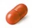

이 기능성이 인정된 성분 5종
성분 사전에 있는 성분 가운데 식약처 인정 기능성 내용에 이 문구가 들어간 성분입니다. 성분을 누르면 효능·권장량·궁합·먹는 시간을 봅니다.
관절·뼈
초록입홍합 추출오일 (리프리놀)
관절 건강에 도움을 줄 수 있음 (개별인정형)
식후 (지방 포함 식사) · 리프리놀-초록입홍합추출오일로서 200mg (복합물 원료는 620mg)
식약처 개별인정 원료 64종
식품안전나라 기능성 원료 인정현황에서 이 기능성이 인정된 원료입니다. 인정 업체가 많은 순으로 정렬했습니다.
| 원료명 | 구분 | 인정번호 | 인정일 | 인정 기능성 내용 |
|---|---|---|---|---|
| Dimethylsulfone(MSM) | 개별인정형 | 2007-20 | 2007-12-06 | Dimethylsulfone(MSM)은 관절건강에 도움이 될 수 있습니다. (기타기능II) |
| CMO 함유 FAC(Fatty Acid Complex) | 개별인정형 | 2014-26 | 2014-06-23 | 관절 건강에 도움을 줄 수 있음 |
| Dimethylsulfone (MSM) | 개별인정형 | 2012-14 | 2012-04-05 | 관절 건강에 도움을 줄 수 있음 (생리활성기능2등급) |
| Dimethylsulfone (MSM) | 개별인정형 | 2006-8 | 2006-06-16 | Dimethylsulfone (MSM)은 관절건강에 도움이 될 수 있으나 인체시험을 통한 확인이 필요합니다. (동물시험을 통하여 관절건강에 도움이 될 수 있음이 확인되었으나 인체시험에서 확인이 필요함. 따라서, 반드시 ---는 도움을 줄 수 있으나 인 |
| Dimethylsulfone(MSM) | 개별인정형 | 2010-45 | 2010-10-26 | 관절 건강에 도움을 줄 수 있음(기타기능II) |
| Dimethylsulfone(MSM) | 개별인정형 | 2005-7 | 2005-03-09 | Dimethylsulfone (MSM)은 관절건강에 도움이 될 수 있으나 인체시험을 통한 확인이 필요합니다. (동물시험을 통하여 관절건강에 도움이 될 수 있음이 확인되었으나 인체시험에서 확인이 필요함. 따라서, 반드시 ---는 도움을 줄 수 있으나 인 |
| Latilactobacillus sakei LB-P12 프로바이오틱스 | 개별인정형 | 2025-55 | 2025-10-16 | 관절건강에 도움을 줄 수 있음 |
| MSM | 개별인정형 | 2009-70 | 2009-08-03 | 관절건강에 도움이 될 수 있습니다.(기타기능 II) |
| Methyl Slufonyl Methane(MSM) | 개별인정형 | 2007-17 | 2007-10-18 | Dimethylsulfone(MSM)은 관절건강에 도움이 될 수 있습니다. (기타기능II) |
| Opti MSM | 개별인정형 | 2008-12 | 2008-02-15 | 디메틸설폰(Dimethylsulfone)은 관절건강에 도움이 될 수 있습니다.(기타기능II) |
| Rain Nutrience DistilPureTM MSM | 개별인정형 | 2008-54 | 2008-10-04 | 관절건강에 도움이 될 수 있습니다(기타기능II) |
| 가시오갈피 등 복합추출물 | 개별인정형 | 2013-25 | 2013-08-20 | 관절 건강에 도움을 줄 수 있음(생리활성기능 2등급) |
| 가시오갈피 등 복합추출물 | 개별인정형 | 2011-28 | 2011-10-13 | 관절 건강에 도움을 줄 수 있음(기타기능Ⅱ) |
| 가자추출물(AyuFlexⓇ) | 개별인정형 | 2022-12 | 2022-02-25 | · 관절 및 연골 건강에 도움을 줄 수 있음 · 장시간 고정적인 자세로 인한 다리의 불편감(부기) 완화에 도움을 줄 수 있음 |
| 강황 추출물(터마신) | 개별인정형 | 2014-2 | 2014-01-29 | 관절건강에 도움을 줄 수 있음(생리활성기능 2등급) |
| 구절초추출물 | 개별인정형 | 2021-12 | 2021-09-29 | 관절 및 연골 건강에 도움을 줄 수 있음 |
| 글루코사민 | 개별인정형 | 2006-18 | 2006-08-17 | 관절 및 연골의 구성성분 관절 및 연골을 튼튼히 하는데 도움 관절 및 연골건강에 도움 |
| 까마귀쪽나무 열매 주정추출물 | 개별인정형 | 2015-22 | 2015-11-04 | 관절건강에 도움을 줄 수 있음(생리활성기능 2등급) |
| 까마귀쪽나무 열매 주정추출물 | 개별인정형 | 2015-23 | 2015-11-04 | 관절건강에 도움을 줄 수 있음(생리활성기능 2등급) |
| 나한과박추출분말(DKB131) | 개별인정형 | 2024-22 | 2024-10-14 | 관절 건강에 도움을 줄 수 있음 |
| 난각막가수분해물 | 개별인정형 | 2024-9 | 2024-04-19 | 관절 및 연골 건강에 도움을 줄 수 있음 |
| 난각막분말(DEMⓇ) | 개별인정형 | 2023-35 | 2023-12-05 | ① 피부 보습에 도움을 줄 수 있음, ② 자외선에 의한 피부 손상으로부터 피부 건강을 유지하는데 도움을 줄 수 있음, ③ 관절 건강에 도움을 줄 수 있음 |
| 닭가슴연골분말(UC-Ⅱ) | 개별인정형 | 2014-39 | 2014-08-19 | 관절건강에 도움을 줄 수 있음(생리활성기능 2등급) |
| 로즈힙 분말 | 개별인정형 | 2008-81 | 2008-12-30 | 로즈힙분말은 관절 및 연골건강에 도움을 줄 수 있습니다. |
| 로즈힙분말 | 개별인정형 | 2014-17 | 2014-05-01 | 관절 및 연골건강에 도움을 줄 수 있음 |
| 로즈힙분말 | 개별인정형 | 2013-18 | 2013-07-03 | 관절 및 연골 건강에 도움을 줄 수 있음(생리활성기능 2등급) |
| 로즈힙분말 | 개별인정형 | 2013-1 | 2013-01-10 | 관절 및 연골 건강에 도움을 줄 수 있음 |
| 로즈힙분말 | 개별인정형 | 2012-27 | 2012-09-28 | 관절 및 연골 건강에 도움을 줄 수 있음(생리활성기능 2등급) |
| 로즈힙분말 | 개별인정형 | 2007-22 | 2007-12-10 | 로즈힙분말은 관절 및 연골건강에 도움을 줄 수 있습니다. |
| 로즈힙분말 | 개별인정형 | 2006-7 | 2006-06-16 | 로즈힙분말은 관절 및 연골 건강에 도움을 줄 수 있습니다. 인체시험에서 로즈힙분말의 관절 및 연골 건강에 도움을 줄 수 있는 기능이 확인되었으나 자료의 수가 제한되어 있습니다. 따라서 ~도움을 줄 수 있다.의 형식으로 표시하여야 합니다. |
| 리프리놀-초록입홍합추출오일 | 개별인정형 | 2009-49 | 2009-06-05 | 관절 건강에 도움을 줄 수 있음 |
| 리프리놀-초록입홍합추출오일 | 개별인정형 | 2008-69 | 2008-11-12 | 관절건강에 도움이 될 수 있음(기타기능II) |
| 발효우슬등복합물 | 개별인정형 | 2020-12 | 2020-07-30 | 관절 건강에 도움 |
| 보스웰리아 추출물(Boswellia serrata R. extract) | 개별인정형 | 2014-23 | 2014-06-04 | 관절 및 연골건강에 도움을 줄 수 있음 |
| 보스웰리아추출물 | 개별인정형 | 2024-15 | 2024-05-23 | 관절건강에 도움을 줄 수 있음 |
| 보스웰리아추출물(SERRATRIN) | 개별인정형 | 2022-17 | 2022-04-18 | 관절 및 연골 건강에 도움을 줄 수 있음 |
| 보스웰리아추출물등 복합물(Flexir) | 개별인정형 | 2021-9 | 2021-09-03 | 관절 및 연골 건강에 도움을 줄 수 있음 |
| 비즈왁스알코올 | 개별인정형 | 2010-1 | 2010-01-08 | 항산화에 도움을 줄 수 있음(생리활성기능 2등급), 위점막을 보호하여 위건강에 도움을 줄 수 있음(생리활성기능 2등급), 관절 건강에 도움을 줄 수 있음(생리활성기능 2등급) |
| 연어이리추출물(DOT™연어핵산) | 개별인정형 | 2019-5 | 2019-04-15 | ① 관절 건강에 도움을 줄 수 있음, ② 위 점막을 보호하여 위 건강에 도움을 줄 수 있음 |
| 연어코연골추출물 | 개별인정형 | 2025-42 | 2025-09-04 | · 자외선에 의한 피부손상으로부터 피부 건강 유지에 도움을 줄 수 있음 · 피부 보습에 도움을 줄 수 있음 · 관절 및 연골 건강에 도움을 줄 수 있음 |
상위 40건만 표시 (전체 64건) — 기능성 원료 인정현황에서 검색하세요.
이 기능성을 표시한 신고 제품
식약처 품목제조신고 가운데 이 기능성을 표시한 제품 889건(2021-04 이후 수집분) 중 알려진 브랜드·최근 신고 순으로 12건을 보여줍니다. 성분별 전체 목록은 제품 찾기에서 보세요.
이 성분들끼리의 궁합
같은 기능성 성분을 함께 먹을 때 알아둘 조합입니다. 전체는 영양제 궁합표에서 보세요.
- 좋은 궁합
글루코사민 + MSM (식이유황)
관절 영양제의 기본 조합
- 좋은 궁합
글루코사민 + 보스웰리아
연골 원료 + 염증 완화
- 좋은 궁합
콘드로이친 (뮤코다당·단백) + 글루코사민
관절 영양제의 대표 조합
- 좋은 궁합
MSM (식이유황) + 보스웰리아
관절 복합제 조합
- 좋은 궁합
콘드로이친 (뮤코다당·단백) + MSM (식이유황)
관절 3종 조합의 한 축
- 좋은 궁합
초록입홍합 추출오일 (리프리놀) + 글루코사민
기전이 다른 관절 조합
- 좋은 궁합
콘드로이친 (뮤코다당·단백) + 보스웰리아
관절 복합제 조합
먹는 시간
| 성분 | 권장 시간 | 메모 |
|---|---|---|
| MSM (식이유황) | 식후 | 나누어 섭취 가능 |
| 글루코사민 | 식후 | 위장 부담 줄이려면 식후 |
| 보스웰리아 | 식후 | 지방 포함 식사와 함께 흡수 유리 |
| 초록입홍합 추출오일 (리프리놀) | 식후 (지방 포함 식사) | 지용성이라 식사와 함께 |
| 콘드로이친 (뮤코다당·단백) | 식후 | 글루코사민과 함께 식후에 |
전체 성분은 영양제 복용 시간표에서 보세요.
관련 가이드
어떤 성분을 어떻게 조합할지는 가이드에서 설명합니다.
고민별관절 영양제, 성분별 차이와 조합 가이드관절 영양제는 '연골 재료를 공급하는 성분'과 '불편감을 완화하는 성분'으로 나뉩니다. 글루코사민과 콜라겐은 전자, MSM·보스웰리아·커큐민은 후자에 가깝습니다.…대상별70대 이상, 영양제는 '덜 겹치고 약과 안 부딪히게'70대 이후에는 위산이 줄어 비타민B12 흡수가 떨어지고, 햇빛 노출이 적어 비타민D 가 부족하며, 근육과 뼈가 빠르게 줄어 낙상·골절 위험이 커집니다. 동시에 …대상별소염진통제를 오래 먹는다면, 영양제는 '겹치지 않게'소염진통제(NSAID)는 위장·신장·출혈 쪽 부담이 있어, 같은 쪽 부담을 더하는 영양제를 피하는 것이 첫 원칙입니다. 오메가3·은행잎·커큐민·보스웰리아는 출혈 …대상별50대 이상 영양제, 약과의 궁합까지 보는 법50대부터는 '무엇을 더 먹을까'보다 '먹는 약과 괜찮은가'가 먼저입니다. 흡수가 떨어지는 비타민B12·비타민D, 골손실을 막는 칼슘·K2가 기본이고, 관절·눈·…대상별부모님 영양제 선물, 무엇을 어떻게 고를까부모님 영양제 선물은 '효과'보다 '안전하게 꾸준히 드실 수 있는가'가 기준입니다. 복용 중인 약과 충돌하지 않고, 알약 크기가 작고, 하루 1회로 끝나는 제품이…
자주 묻는 질문
'관절 및 연골 건강에 도움을 줄 수 있음'은 어떤 의미인가요?
식품의약품안전처가 과학적 근거를 심사해 인정한 기능성 문구로, 인정된 원료를 정해진 양 이상 넣은 건강기능식품에만 표시할 수 있습니다. 질병의 예방이나 치료 효과를 뜻하지 않으며, 개인차가 있습니다.
관절·연골 건강 영양제는 어떻게 고르나요?
제품 라벨의 '기능성 내용'에 이 문구가 있는지, 원료명과 1일 섭취량이 인정 기준에 맞는지 확인하세요. 같은 기능성이라도 원료마다 작용 방식과 주의사항이 다르므로 성분 사전의 권장 섭취량·주의사항을 함께 보세요.
약을 먹고 있는데 함께 먹어도 되나요?
일부 성분은 약의 흡수나 작용에 영향을 줄 수 있습니다. 성분 사전의 '약과 함께 먹을 때' 항목과 약과 영양제 가이드를 확인하고, 새로 시작하기 전에 의사·약사와 상의하세요.
함께 보면 좋은 페이지
- 기능성별 영양제 전체 목록
- 나에게 맞는 영양제 찾기 — 고민과 상황으로 성분 추천
- 영양제 궁합표 · 영양제 복용 시간표
- 약과 영양제 가이드